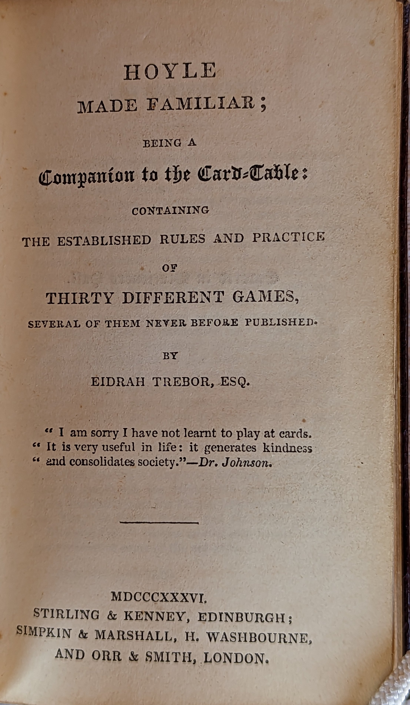
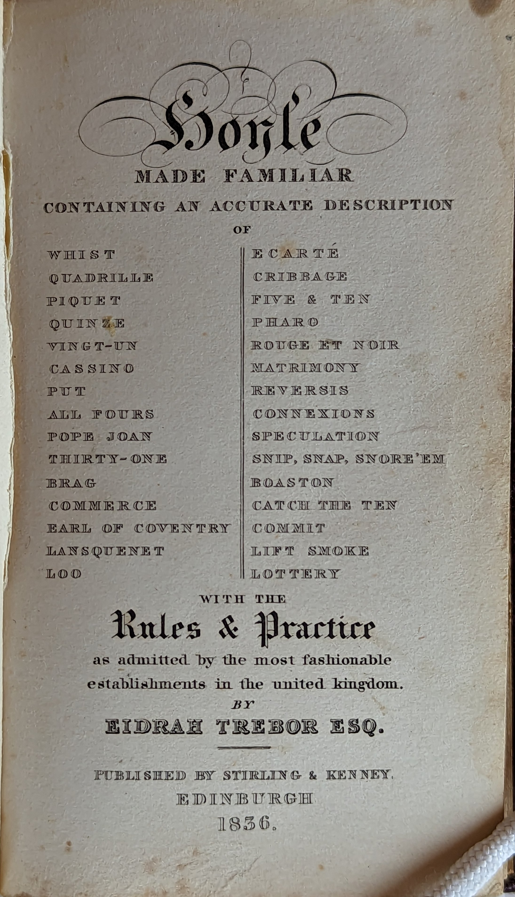

A Descriptive Bibliography of Edmond Hoyle
Copyright © 2014-26 by David Levy
(page updated 2026-05-01)User Guide
Hardie.4
Hoyle Made Familiar, Stirling & Kenney, fourth impression, 1836.
 |
Title: | HOYLE | MADE FAMILIAR; | BEING A | Companion to the Card=Table: | CONTAINING | THE ESTABLISHED RULES AND PRACTICE | OF | THIRTY DIFFERENT GAMES, | SEVERAL OF THEM NEVER BEOFRE PUBLISHED. | BY | EIDRAH TREBOR, ESQ. | “ I am sorry I have not learnt to play at cards. | “ It is very useful in life: it generates kindness | “ and consolidates society.”—Dr. Johnson. | [short rule] | MDCCCXXXVI. | STIRLING & KENNEY, EDINBURGH; | SIMPKIN & MARSHALL, H. WASHBOURNE, | AND ORR & SMITH, LONDON. |
| Collation: | 24o: π4 A–G8 [$1 signed]; 60 leaves, pp. [i–v] vi–vii [viii], [1] 2–112 |
| Engraved Title: |  |
| Contents: | Signature (Page) Reference | Contents | Signature (Page) Reference | Running Titles |
| π1r (i) | title | |||
| π1v (ii) | ‘Entered in Stationers Hall.’ | |||
| π2r–π4v (iii–viii) | see Hardie.1 | π2r–π4v (iii–viii) | see Hardie.1 | |
| A1r–G5v (1–106) | see Hardie.1 | A1r–G5v (1–106) | see Hardie.1 | |
| G6r (107) | see Hardie.2 | G6r (107) | see Hardie.2 | |
| G6v–G8v (108–112) | ‘[...] | [colophon]’ | G6v–G8v (108–112) | ‘WHIST.’ | |
| on G6v (108) | ‘SHORT WHIST.’ |
| Plates: | Frontispiece engraving: Two couples at card table with two females spectators. Drawn by J. Stewart. Engraved
on steel by W. H. Lizars Title engraving: extra engraved title having only the first publisher and dated 1836 on G3r(101) woodblock: a tapis or cloth covering the Rouge et Noir table |
| Publisher: | Stirling & Kenney, Simpkin and Marshall, Henry Washbourne, Orr & Smith |
| Printer: | Robert Hardie (colophon) |
| References: | Rather 140 |
| Colophon: | ‘R. HARDIE, PRINTER.’ |
| Copies Seen: | O [Jessel f.491]; Copisarow; TNJ [GV1243.H2]; Levy [1003] |
| Other Copies: | NvLN [GV1243.H25] |
| Notes: | The same setting of type as Hardie.1 with updated preliminaries, the material on short whist from Hardie.2 and new material on whist on the last three leaves.The running title "CRIBBAGE" on page 53 of earlier impressions has been regularized to "CRIBBAGE." as it appears in all later impressions. |